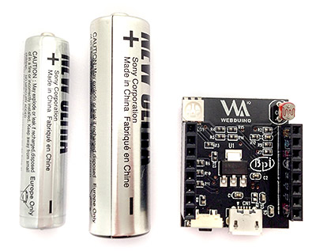
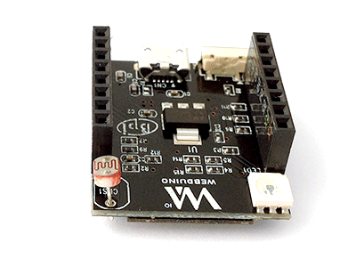
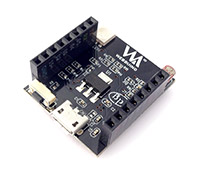
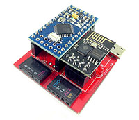
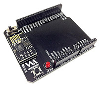

認識 Webduino Smart
Webduino Smart 是 2016 年推出的物聯網開發板，有別於過去馬克 1 號和 Fly 需要搭配 Arduino 才能運作，Smart 可以自行獨立運作，同時也具備連上網際網路 ( Internet ) 和透過區域網路 ( WebSocket ) 操控的能力，相信更能有效地應用在物聯網的開發和各種創意上！
預設元件和腳位介紹
Webduino Smart 是一塊長 3 公分寬 2.5 公分的開發板，重量約 85 公克，腳位有數位腳 0、2、4、5、14、16，PWM 腳位 12、13、15，類比腳 AD ( A0 )，其他腳位 TX、RX、3.3V、VCC、RST 和 GND 各 1 個。
開發板內建一個光敏電阻、一個三色燈和一個微型按鈕開關，其中 AD 腳位預設供給光敏電阻使用，三色 LED 燈的紅色使用 15 號腳、綠色使用 12 號腳、藍色使用 13 號腳 ( 三色 LED 燈為「共陰」，在官網其他範例外接的三色 LED 為「共陽」 )，而一個微型按鈕開關則使用了 4 號腳位，使用的時候要特別注意。

外觀介紹
大小對照 ( 左邊是四號電池和三號電池 )：

360 度照片：

更換 Smart 腳位貼紙
若覺得原本貼在 Smart 開發板上的貼紙比較不好看，可更換包裝內的腳位貼紙，腳位貼紙分為「左邊外側 L in」、「左邊內側 L out」、「右邊內側 R in」和「右邊外側 R out」，左右邊的識別以 Smart 的 Webduino Logo 朝上做左右邊區分，使用者可自行用剪刀剪開後黏貼。

若要更換貼紙，只需撕下原本的白色腳位貼紙，再將新的黑色貼紙貼上即可，數字與英文字對齊的邊緣朝上貼，可參考上方 360 度照片，千萬要注意左右邊、內外側不要貼錯了！

Webdino 開發板差異對照表
| Smart | 馬克 1 | Fly | |
|---|---|---|---|
| 照片 |  |  |  |
| 體積 | 小 | 略小 | 中 |
| 尺寸 | 3cm x 2.5cm x 1cm | 4.5cm x 4cm x 2cm | 6.5cm x 5cm x 2cm |
| 價格 | 預計小於 NT$ 300 | NT$ 840 | NT$ 840 |
| 獨立運行 | O | O | 需搭配 Arduino UNO |
| Webduino Blockly | O | O | O |
| 雲端 ( 遠端 ) 更新 | O | O | O |
| Internet | O | O | O |
| WebSocket | O | 遠端更新後支援 ( 需註冊雲端平台帳號 ) | 遠端更新後支援 ( 需註冊雲端平台帳號 ) |
| 藍芽 | 遠端更新後支援 ( 需註冊雲端平台帳號 ) | O | O |
| 序列埠 | X | X | O |
| 韌體 OpenSource | X | Arduino 端 | Arduino 端 |
| 內建元件 | 三色 LED ( 共陰 ) 光敏電阻 微型按鈕開關 | 蜂鳴器 | X |
| LED 三色 LED 繼電器 光敏電阻 按鈕開關 震動開關 | O | O | O |
| 溫濕度 LED 點矩陣 伺服馬達 人體紅外線偵測 聲音偵測 超音波距離偵測 蜂鳴器 | 遠端更新後支援 ( 需註冊雲端平台帳號 ) | O | O |
| 紅外線發射接收 | 遠端更新後支援 ( 需註冊雲端平台帳號 ) | 遠端更新後支援 ( 需註冊雲端平台帳號 ) | 遠端更新後支援 ( 需註冊雲端平台帳號 ) |
| RFID 三軸加速度計 | 遠端更新後支援 ( 需註冊雲端平台帳號 ) | X | 遠端更新後支援 ( 需註冊雲端平台帳號 ) |
| 土壤偵測 可變電阻 | X | O | O |
| 搖桿 | X | X | 遠端更新後支援 ( 需註冊雲端平台帳號 ) |
如果您還想了解更多，可以參考：
1. 完整教學範例：https://webduino.io/tutorials.html
2. Blockly 教學：https://goo.gl/Y8sRkl
3. 產品總覽：https://webduino.io/buy.html
4. 露天賣場：http://goo.gl/0Dj9ip
2. Blockly 教學：https://goo.gl/Y8sRkl
3. 產品總覽：https://webduino.io/buy.html
4. 露天賣場：http://goo.gl/0Dj9ip